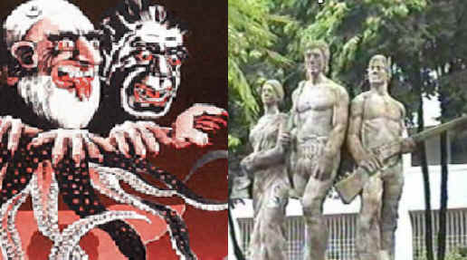
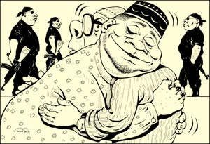
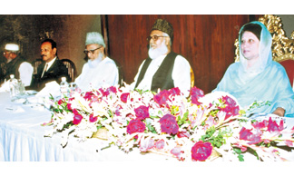

|
|
|
|
|
|
|
|
|
|
|
|
|
||||||
|
|
|||||||
|
|
Election Nightmares September 2001
--------- The article was written just before general election of Bangladesh held on October 1, 2001. Abul Kasem writes from Sydney. His e-mail address is abul88@hotmail.com
|
|
|||||
|
|
|
||||||
Election Nightmares
September 2001
....I know what you are thinking after going through my dismal write-up. You are thinking that those incidents can never happen in Bangladesh. Those are my wishful thinking. Well, that is why this essay is named 'Election Nightmares'. But think again. Those nightmarish events have every possibility of being implemented in Bangladesh if the BNP-Islamist coalition wins this important election and rises to power. .....

Picture courtesy : http://www.jamatepislami.com/
Election fever is on again after 5 years of lull. One may recall that election in Bangladesh had never bee a very pleasant affair. Blood has already been shed in the past few days and much blood will be shed in the coming days. The foremost question in peoples mind is to vote for which party? The majority of the people will vote either Awami league (AL) or the BNP-Islamist coalition.
For the last few days, I thought very deeply about consequences of BNP-Islamists led coalition coming to power. The burning issue on my mind is the freedom of expression that we enjoy today in writing and publishing in Internet newspaper like NFB or in any print mainstream newspapers such as the Daily Star, The Independent, The Bangladesh Observer, etc.
This glasnost or openness in expression one's opinion has opened a Pandora's Box no doubt. There are already threats by some quarters in BNP that NFB is crossing the limit of freedom of expression and should be closed down. Those who talk in this fashion are none other than the Islamic supporters of BNP.
They are simply frustrated at the religious criticisms that are being published every now and then in the popular Internet newspaper from Dhaka. These people forget one simple truth and that is, the same cyber newspaper also publishes freethinker-bashing articles almost on a daily basis.


Picture: BNP-Islamist coalition
The freethinkers have never objected to the publication of any of these freethinker-bashing articles and have never ever want that the news forum should be closed down.
Have you ever thought if this kind of free expression would have been possible if BNP-Islamist were in power? To my mind it is almost an impossibility.
Therefore, this coming election result will determine if the Bangladeshis will continue to enjoy this unprecedented free-expression or will be gagged if they tried to speak against any matter that one section of the population (especially the religionists) may object. We must remember that BNP cannot form a viable Government alone without some supports from the Islamists. And why should the Islamists support BNP if they do not get what they want? So, BNP have to negotiate a deal with its three partners. It is just a matter of time when we will see that Islamic partners will push BNP to agree an Islamic agenda. And that is for sure.
When I thought on this issue, I suddenly went back in 1971 and those days of the religionists (Razakars and Al Badars .Pakistani/Bangladeshi Islamists) and I reminisced those nightmarish days and nights that I (rather we) experienced personally. I still shudder whenever I think of those days. Are we going back to those dark and ominous days again? Here are some of my personal thoughts on events that may take place in Bangladesh if BNP-Islamist coalition wins the election.
All the imaginary events that I am describing below are based on my personal experience when Bangladesh was in the hands of the Razakars and the Islamic soldiers of Pakistan. For those who were not born at that time or were too young to remember those dark days and nights, these examples will be almost impossible to imagine, Those who experienced those days but pretend that nothing happened or those who have selective amnesia are simply deluding themselves.
These are my election nightmares:
The BNP-Islamists will agree to implement Sharia laws in Bangladesh. The Constitution of Bangladesh will be changed to make Qur'an and Hadith as the only source of laws in Bangladesh. Hudud laws will also be enforced in due course.
The popular NFB will be taken over by the Islamists. Mr Tanveer Chowdhury will be tried in Sharia court for sheltering the atheists, freethinkers, infidels and blasphemers. He will plead that he sheltered the Islamists too.
However, his plea will simply be ignored. He will be found guilty of blasphemy and beheaded in the compound of Baitul Mukarram mosque in Dhaka in presence of crowds chanting Allahu Akbar and Naraye Takbir, Allahu Akbar, etc.
The Islamists will turn NFB in to a Sharia site. Only Qur'an, Ahadith and Islamic writings of such personalities as Maulana Moudoodi will be published endlessly. The current readership of 10,000 to 15 000 per day will dwindle to around 10-15 per day. Those Islamists who write in NFB will be the only readers.
Jaffor Ullah will probably be kidnapped from America gagged and put into a jet plane by the Jihadis and flown to ZIA International Airport in Dhaka. Like Tanvir Chowdhury, he will be tortured and shot. His dead body will be displayed openly near the Gulistan junction (where Mirjumla's Kaman is located).
If the Jihadis fail to kidnap Jaffor Ullah then they will gun him down at his doorsteps in America by the hired assassin. The FBI and the U.S Government will have the slightest clue in tracing the killers of the editorial board member of NFB.
Jamal Hasan will face a similar fate. He will probably be lured by an Islamic Chameleon to have a dialogue with a friend. He will never return home. His wife and kid will frantically search for him without any success. The U.S. guards will eventually find his decomposed dead body in a disused mining pool somewhere in U.S with bullet marks and signs of torture on his person (just like back in 1971 people used to find dead bodies in many swampy and uninhabited areas).
A death squad will be despatched to several Western countries to track down and finish off with Fatemolla, Abul Kasem, Syed Kamran Mirza, Satya Sandhani, Shabnam Nadiya, Khurshid Chowdhury, Narayan Gupta, Avijit Roy, Taslima Nasrin, Shabbir Ahmed, Habib Sarwar, Aparthib Zaman, Akash Jahed.....The death squad will be successful in some cases and will fail in other cases.
Who will survive is difficult to guess. It is certain that Shabnam will be raped before being killed. (This was how it used to be done back in 1971. A death squad used to be sent to the family whom the Razakars had targeted for elimination)
The remainder of the Mujib family (like Sheikh Hasina, Sheikh Rehana, their spouses and their children) will be finished. The name Mujib and Bangabandhu will be eliminated from the soil of Bangladesh. Any one with the name 'Mujib' have to change his/her name to a more appropriate Islamic name much the way that most Muslims do not want the name 'Israel'.
General Ziaur Rahman will be declared the "Abbun Bangladeshis" father of Bangladesh, and Khaleda Zia will be the "Ummun Bangladeshis" mother of the Nation. Sheikh Mujib's portrait displayed in public places will be removed and replaced with the portrait of a smiling Gen. Zia some in military attire and other with civilian western attire. The thin moustache of the great general will be razor sharp and the leader will sport a youthful vigor with a permanent smile on his face. Bangladesh's Ammajan will also look very sharp in the portrait a la Babita hairstyle.
However, right in front of Zia International airport, Mrs. Khaleda Zia's larger than life portrait may sport a Hijab to impress the visiting Sheiks of United Arab Emirate or Saudi Arabia's King. The onetime despot Ershad will be the Brother and Begum Rowshan Ershad will be the Sister of the nation. Golam Azam will be brought back to politics; his title will be the Grand Mufti of Bangladesh. Maulana Saikul Hadis will be the grand father of Bangladesh. All of these may sound hilarious but make no mistake about it that it may happen if BNP and her allies win this coming election.
All communists, socialists, freethinkers and secularists will be hunted down and slaughtered in Indonesian style. In Indonesia, about 1 million communists were killed. The number of such people killed in Bangladesh will be 3 million. Before killing these kafirs and enemies of Islam, their blood will be siphoned off just like the way it used to be done by the Razakars in those good-old-Islamic days of 1971. This blood will then be exported to earn foreign exchange so that General Zia's Mazar in Sher-e-Bangla Nagar can have a real gold dome.
In due course the time clock in Bangladesh will revert back to 1971. All Razakars, Al Badars, Al Shams will be resurrected. Ashrafuzzaman Khan who never returned to his homeland after December 16, 1971, will be brought back to Dhaka with an honor guard at the tarmac of ZIA International airport. Golam Azam himself will be there with his entire Shura member to greet Ashrafuzzaman at the airport. Along with him will come all the distinguished member of CARE, ICNA, ISNA, and NABIC's office bearers. All the Razakars who went hiding will be asked to come out of their hideout. This time they will be issued with M-16 and/or AK-47 rifles and plenty of plastic bombs.
Each Razakar will be assigned to survey and monitor about 5 families. They will dictate every aspect of family lives especially on religious matters. For example, if the adult members of a family do not pray five times a day, then they will be ordered to pray.
If they refuse to follow that order, then they will be shot dead on the spot. Remember, when the Arab invaders conquered Persia, they did exactly this. One Arab was assigned to each family to control the livelihood of the Persians. That was how the Arabic script replaced the original Persian script.
Many Bangalee Military and Police personnel will refuse to kill their own flesh and blood. These security people will be gunned down immediately for refusing to follow Islamic orders. To replace these renegade people, Islamic soldiers and Jihadis will be imported from the Islamic brotherhood countries of Taliban land (Afghanistan), Pakistan, and possibly from Sudan, and Nigeria as well.
In total, about half a million of these Islamic brothers will be involved in the search and destroy operation. As added rewards for their pious duty each of these foreign Islamic brother soldiers will be awarded at least two Bangalee women as captives/and or booties. These women will be the mothers, sisters or the wives of the murdered communists, socialists and free thinkers.
They will devour our women like a starved wolf eats its prey (we saw this happening in 1971). These Islamic soldiers will be handed over the land and properties of the slain communists and free thinkers. Thus, they will have a great and enjoyable life in Bangladesh. Many of these foreign Islamists will become the adviser to the BNP-Islamist coalition Government and will control every thing. Eventually Bangladesh will be become Pakistan again.
Our national anthem will be replaced by one imported from Karachi, the seat of Urdu culture in Pakistan. Of course, Dhaka's Islamic Foundation with the help of Dhaka's poet "philosopher" Farhad Mazhar will modify it. Also, dHAKA-fame eminent rock artist Mac (Maqsood) will be requested to set tune to the Urdu-Bongo lyric in the fashion of Bollywood-Bangla-Bhangra fusion music, which is his forte these days. To purify the adulterated new culture of Bangladesh all works of Rabindranath Tagore and other Hindu writers, all works of Humayun Ahmed and other secularists as well as some selected writings of Kazi Nazrul Islam will be completely banned.
Any one found with any writings of these writers will face a minimum of 100 lashes. All citizens will be issued with the Islamic books written by Abul Ala Moudoodi and Golam Azam. A condensed version of their writings will be printed in pocket-sized format (like the red book of Mao); however it be bound by green colored synthetic rubber to make it waterproof and to save the book from torrential monsoon deluge.
Every person must always carry this little green book in a way that one carries his driving licence and credit cards. This pocket size green book will contain the solution of all problems because it will be based on Qur'an and hadith. After all, Islam is a complete code of life. It has the solution for all human problems. Arabic will also become a compulsory language. Bangla scripts will be gradually replaced by Arabic or Persian alphabet. The use of Bangla alphabets will be severely discouraged since these are not the alphabets of Islam.
Folks, wait and you will see that Bangladesh will be declared an Islamic country where only the Sharia laws will be implemented. This dear motherland of ours will be an extension of Taliban ruled Afghanistan and the dictator ruled Pakistan. The fundamental human rights will be abolished. Our dear budding democracy will be killed in its infancy. The Universal declaration of human rights will be replaced by the Islamic human rights. After finishing off with the free thinkers, the BNP-led coalition will introduce Islamic freethinking a concept propounded in NFB by a pedagogue from Upper Volta University.
Similar to other revolutionary Islamic country, Islamic democracy will be established in Bangladesh. The supreme head will be the Amir'ul Mumenin. The first Ami'rul Mumenin will be Golam Azam. His words will be laws similar in ways of what we find in Taliban land where the words of Mullah Omar are the laws.
It is most likely that BNP will agree to the imposition of blasphemy law in the same manner as in Pakistan. BNP-Islamist coalition may also agree to the imposition of mobile prison (Burqa) for our mothers, sisters and wives. It is very likely that the mother of the nation, Umm Khaleda Zia must be in mobile prison whenever she ventures out.
Similar to Pakistan, there will be hardly any minority left in Bangladesh. The current Hindu population of around 10% (this used to be around 30 % before 1971) will quickly go down to around 0.5% to 1%. Only a few thousand of Christians and Buddhists will be in Bangladesh. All non-Muslims will be forced to wear yellow star to identify themselves as non-Muslims (just like in Taliban land). They (the minorities) will also be required to pay the infamous Zijiya tax.
All the Budhhist statutes at Mainamati (in Comilla district) and Mahastan (in Bogra district) will be destroyed. BNP will first object to this destruction of our priceless heritage but will finally surrender to the Islamists' demand due to the pressure from the Arab Masters. Any one found with anything with the slightest resemblance of a statute shall face death penalty.
In cultural arena, all zari, sari, bhatiyali, murshidi, baul songs, polli giti, etc., will be banned. These will be replaced with hamd, nat-i-rasul, and qauwali. Only modern song you'll ever hear will be our new national anthem (Farhad Mazahr-Mac's creation). Likewise, Dhaka University's Fine Arts building will be closed forever and the building will be fumigated first and then modernized to house Islamic arts and crafts such as display of decorated swords, and rehels (for holding Qur'an above the feet level). Another section will sport a display of fine Hizab, Nequab, Burqua, Chaddar, etc. Shapely young girls will act as model to popularize Islamic female dresses.
In another section of the building, the fine arts of applying henna dye to color hand and feet and yes coloring hair will be demonstrated too. Nearby, in another room a barber will show to young man how to sport a chap dari a la Saudi style, which is now very much in vogue in Hollywood movies.
All Bangalee intellectuals and professionals like authors, poets, novelists, painters, newspaper editors, architects, movie makers, engineers, scientists, doctors, academics, teachers will be systematically and methodically eliminated in Nazi style Gestapo and gas chambers. In this way, the unfinished job of 1971 will be completed. This is sure way of transforming the Bangalee society into a nation of beggars, fools, subservient and slaves of Pakistani Islam.
Selective breeding will take place between the true Pakistani Islamists and the half- Islamist Bangalee women. This original plan of a few Pakistani Generals could not be implemented in 1971 due to the rapid advance of our valiant Mukti Bahini and the allied forces. This time however it will be a success.
In fact, BNP-Islamist coalition will welcome such innovative breeding idea or eugenics. Pakistani soldiers, Afghan Pathans will have temporary marriages (mut'ah marriage) with our selected women to breed a new race who will be true Islamists. Eventually the whole Bengali race will change. This was the ultimate aim of Major General Rao Farman Ali and General A.A.K. Niazi back in 1971. This was how they wanted to make the then East Pakistan a true Islamic State.
I know what you are thinking after going through my dismal write-up. You are thinking that those incidents can never happen in Bangladesh. Those are my wishful thinking. Well, that is why this essay is named 'Election Nightmares'. But think again. Those nightmarish events have every possibility of being implemented in Bangladesh if the BNP-Islamist coalition wins this important election and rises to power. My wishful/absurd thoughts are all based on the tumultuous events of 1971. I earnestly hope that my 'election nightmares' remain just a nightmare and never become a reality.
How can we forget the events of 1971 and all the blood that our brothers, sisters, fathers, mothers and dear ones have shed for the Bangladesh that we cherish so much? The freedom of expression that we take for granted today was achieved through rivers of blood, sweat and tears. How can we let this priceless gift of freedom slip away from us? Do not betray your blood. Please vote carefully.
---------
The article was written just before general election of Bangladesh held on October 1, 2001. Abul Kasem writes from Sydney. His e-mail address is abul88@hotmail.com
|
|
|
|
|